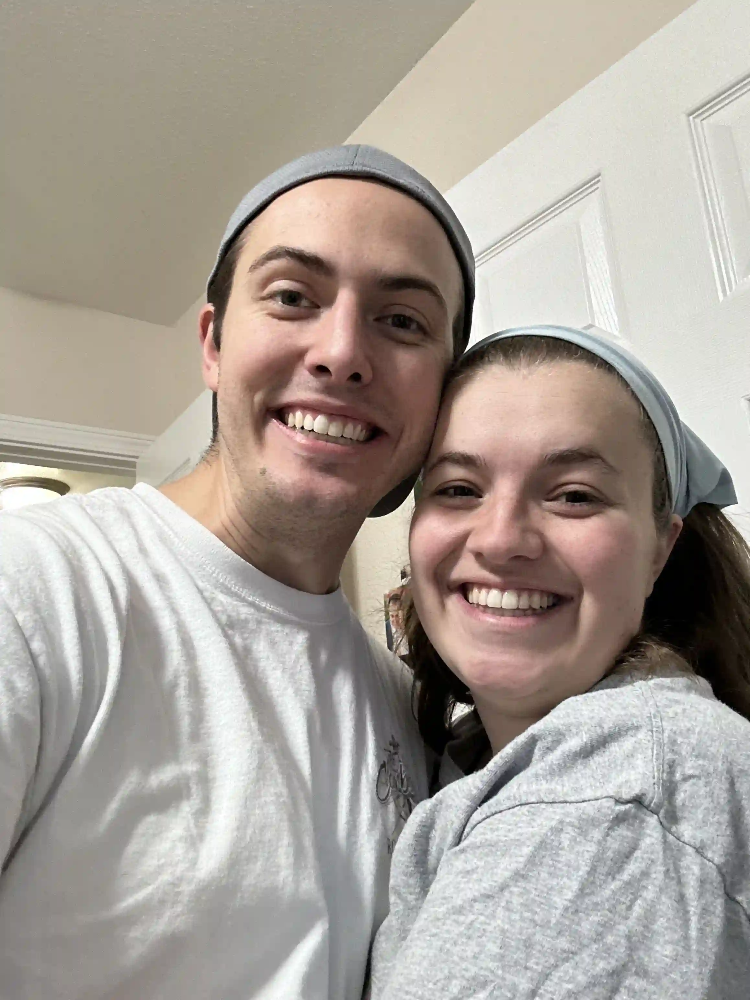

Ethan Shirley | WDD 130
Hi all! My name is Ethan Shirley and I'm from Gilbert, Arizona. I enjoy spending time with my wife, playing board games, video games, ultimate frisbee, hiking, escape rooms, and a bunch of other activities. I love problem solving and finding innovative ways to better the environment around me. I've taken a huge interest in learning how to code video games and love seeing a project come to life. I'm currently enrolled in BYU Pathway with a focus on Software Development. I know small steps will help me reach my destination eventually.